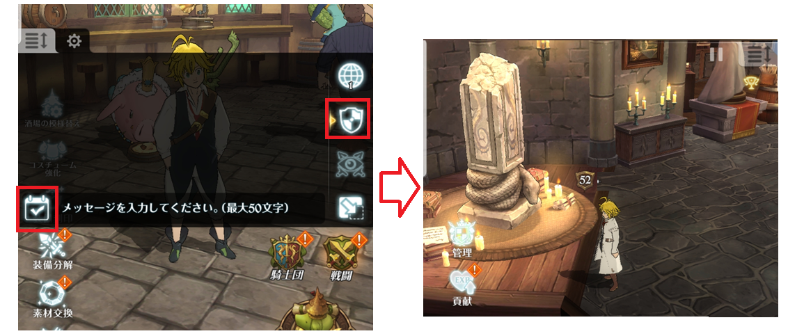
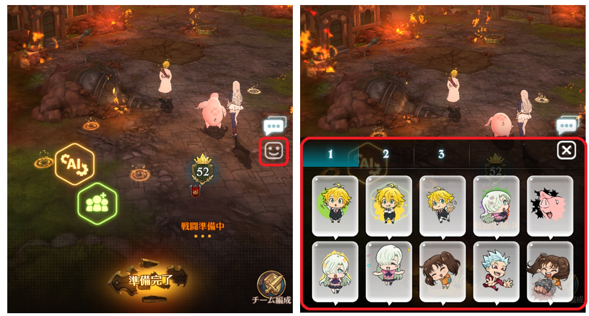
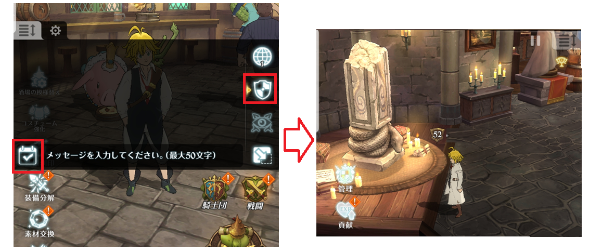
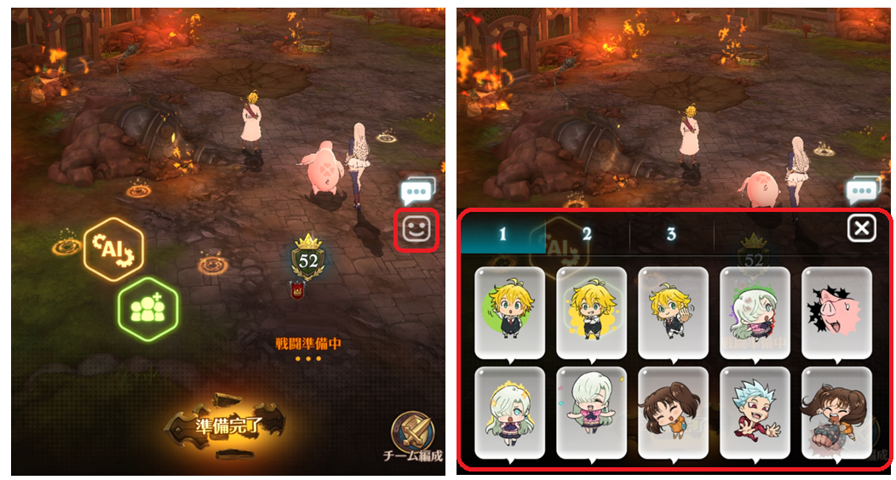

12 March Patch Notes
Maintenance Time
JP | 12 Mar 2020 (Thursday) 14:00 ~ 17:00 JST (tentative)
KR | 12 Mar 2020 (Thursday) 09:00 ~ 12:00 KST (tentative)
Update Details
1. Event Hawk Pass
■ Hawk Pass Mission Duration
12 Mar 2020 (Thursday) after maintenance ~ 2 Apr 2020 (Thursday) 23:59
■ Special Hawk Pass Sales Duration
12 Mar 2020 (Thursday) after maintenance ~ 2 Apr 2020 (Thursday) 22:59
■ Price
NORMAL: free
SPECIAL: 980yen
■ How to Purchase
■ Hawk Pass Rewards
■ Hawk Pass Weekly Obtainable Points
2. Throwback Stages No.2~3

■ Throwback Stages No.4~5 Event Duration
12 Mar 2020 (Thursday) after maintenance ~ 19 Mar 2020 (Thursday) before maintenance
3. Addition of 2 New Characters
■ [Ruler of Torrents] Noblesse Eastin Skills Info (rank 3)
Skill 1 - Quebra: Inflicts damage equal to 300% of Attack on all enemies. Fills Ultimate Move Gauge by 2 orb(s).
Skill 2 - La Sed: Increases Attack-related stats of all allies by 30% for 3 turn(s).
Ult - Triste Fin: Inflicts Spike damage equal to 350% of Attack on all enemies.
Passive/Unique - Blue Wave: Increases basic stats by 5% per each Buff on allies and enemies. (Limit 5 time(s))
■ [Deathbringer] Human Weapon Mono Skills Info (rank 3)
Skill 1 - Fatal Melody: Inflicts Sever damage equal to 400% of Attack on one enemy.
Skill 2 - Biohazard: Inflicts damage equal to 350% of Attack on one enemy.Poisons for 3 turn(s).
Ult - Endless Pain: Inflicts damage equal to 455% of Attack on one enemy. Makes target(s) Bleed for 2 turn(s).
Passive/Unique - Assassin: Increases damage dealt by 50% if attacking enemies with Bleed, Poison or Shock Debuff(s).
Obtainable Location
※ Mono - Step Up Banner, Mono Pack
※Eastin - Step Up Banner
4. New Step Up Banner
※ This banner will include all the past OCs
■ Banner Duration
12 Mar 2020 (Thursday) after maintenance ~ 29 Mar 2020 (Thursday) 23:59
■ Rate Up Characters
・ SSR [Ruler of Torrents] Noblesse Eastin
・ SSR [Deathbringer] Human Weapon Mono
■ Price
・ 30 diamonds/multi
※ Step 2 and 7 cost only 1 diamond
※ Step 5 guarantees a SSR
※ When you finish step 10, you will start again from step 1
■ Step Up Details
■ Mileage Rewards

5. New Costume Set
■ Set Cash Sales Period for Both Sets
12 Mar 2020 (Thursday) after maintenance ~ 25 Mar 2020 (Wednesday) 23:59
■ Price
・ 2080 yen for UR head, body and weapon
・ 60 gems for SSR head, body and weapon
■ Individual Pieces Gem Sales Period for Both
26 Mar 2020 (Thursday) 00:00 ~ 8 Apr 2020 (Wednesday) 23:59
■ Price
・ UR: 30 gems/piece
・ SSR: 20 gems/piece
6. 1 New Pack Added
[Deathbringer] Human Weapon Mono Pack
■ Pack Sales Duration
12 Mar 2020 (Thursday) after maintenance ~ 26 Mar 2020 (Thursday) before maintenance
■ Pack Details
・ 30 diamonds
・ SSR [Deathbringer] Human Weapon Mono x1
■ Price
2940 yen
■ Purchase Limit
1
7. New Battle Event
・ Battle Event [Return Plushies I]
■ Event Duration Duration
12 Mar 2020 (Thursday) after maintenance ~ 18 Mar 2020 (Wednesday) 23:59
■ Clear Limits
5 times/day
■ First Clear Reward
■ System Changes and Improvements ■
■ 1. New Engraveable Characters Added
・ Eastin
・ Mono
・ Deldry
・ Arden
■ 2. Addition of 1 New Character to Permanent Pool
SSR <The Ten Commandments> Derieri of Purity will be added to Character Gacha Part 2 banner, Part 2 GSSR Ticket, Race Ticket II (Demon/Fairy/Goddess)
■ 3. Chat system improvement/revert
 



■ Bug Fixes ■
1. Fixed an issue of display error in certain equipment packs
2. Fixed an issue where the checkmark for mission is out of display on the battle summary screen after Knighthood boss is defeated
3. Fixed a sound issue on some Android devices
4. Fixed an issue where after using rank 3 of green Estarossa's Full Counter, when you use another rank 3 skill on the next turn, only the Taunt effect is in play
5. Fix an issue where using a higher rank counter skill after using a lower rank counter skill will cause the counter to be cancelled
5. Fix a text issue on Valentines' Day Decoration:
Before: SP Dungeon Gold Stage Reward Gauge increases by 14%
After: SP Dungeon Gold Stage Reward Gauge gain increases by 14%.
■ Others ■
1. [Throwback Battle No.2~5] difficulty adjustment
Increases the skill card usage per turn from 3 to 4.
2. You will now be able to sell Puringpooh Medals
Point adjustment for Knighthood HELL Stage clear